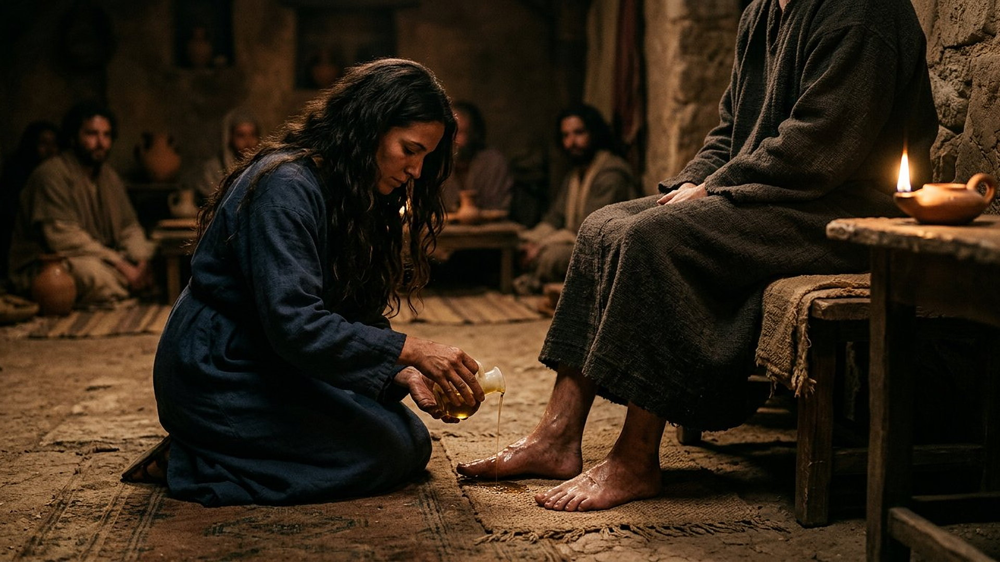
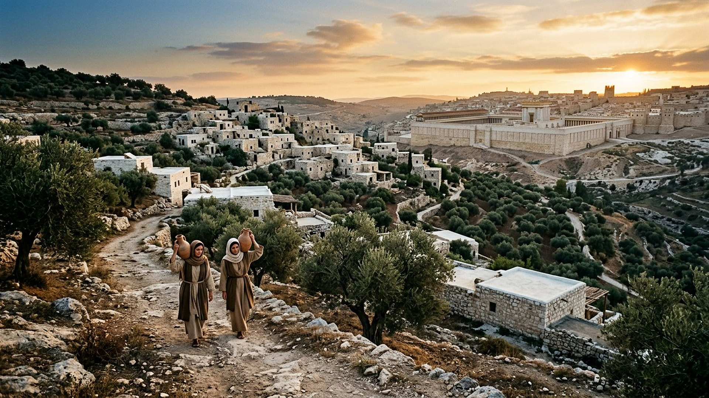
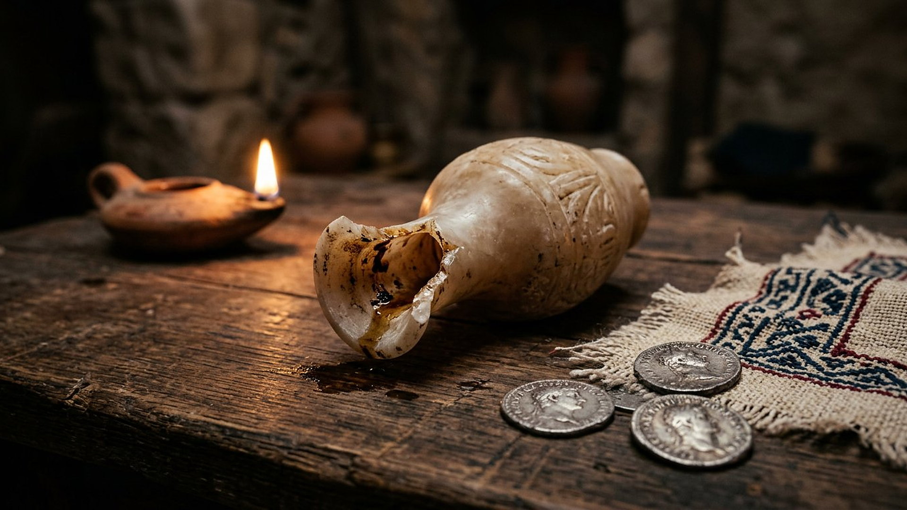

Salle 53 — Jean 12 ; Matthieu 26 ACCOMPLIE
Marie de Béthanie : le parfum versé
« En vérité, je vous le dis : partout où cette bonne nouvelle sera prêchée, dans le monde entier, on racontera aussi en mémoire de cette femme ce qu'elle a fait. » — Matthieu 26:13 (d'après Segond 1910)
Reconstitution numérique — l'onction des pieds (Jean 12:3) : l'hôte n'est montré que des genoux aux pieds, par pudeur, sans auréole ni portrait.
Un flacon brisé à quelques jours de la Pâque
À Béthanie (en grec, translittération : Bēthanía), village du versant oriental du mont des Oliviers où vivent Marthe (translittération : Mártha), Marie (translittération : María) et leur frère Lazare (translittération : Lázaros), un souper est offert à Jésus six jours avant la Pâque. Au cours du repas, Marie prend une livre de parfum de nard pur — une essence précieuse importée de loin —, en oint les pieds de Jésus et les essuie avec ses cheveux : « et la maison fut remplie de l'odeur du parfum » (Jean 12:1-3, d'après Segond 1910). Aussitôt, le calcul s'élève contre le geste : ce parfum valait trois cents deniers, près d'un an de salaire d'ouvrier ; « pourquoi ne l'a-t-on pas vendu et donné aux pauvres ? » Jésus répond : « laissez-la ; elle a gardé ce parfum pour le jour de ma sépulture. Vous avez toujours les pauvres avec vous, mais vous ne m'avez pas toujours » (Jean 12:4-8, résumé et citations sobres).
Dans la lecture retenue par ce musée, ce geste silencieux est un acte de prescience en miroir : sans discours, Marie oint d'avance, pour sa sépulture, celui dont les autres ne comprennent pas encore la mort prochaine — et Jésus promet que son geste sera raconté « dans le monde entier », partout où la bonne nouvelle sera prêchée. Cette salle, qui le raconte encore, se présente donc elle-même comme un fragment de cet accomplissement en cours. Les différences entre les récits évangéliques sont exposées ci-dessous sans les aplanir.
Le récit en cinq temps
Du souper de Béthanie à la promesse mondiale, avancez d'une station à l'autre.

Le banc des preuves : un parfum de luxe, des récits qui diffèrent
DÉBATTU
Le nard et les flacons d'albâtre : un luxe documenté, un flacon débattu (EV-62)
Le nard des textes anciens est tiré d'une plante des hautes vallées de l'Himalaya (en latin botanique : Nardostachys jatamansi) et parvenait au Levant par des routes commerciales longues et coûteuses — ce qui rend crédible l'estimation de trois cents deniers. Les petits flacons à parfum en albâtre et en verre du monde gréco-romain abondent dans les collections publiques, dont celles du musée du Louvre. Débattu : le flacon de Marie a-t-il été littéralement brisé, comme le suggère Marc pour l'onction de la tête, ou simplement ouvert et versé, et la valeur exacte du parfum selon les manuscrits — les évangiles donnent une estimation, pas une facture.
DÉBATTU
Une onction ou plusieurs ? Les récits mis côte à côte
Matthieu et Marc placent à Béthanie, dans la maison de Simon le lépreux (translittération : Símōn), une femme anonyme qui verse le parfum sur la tête de Jésus (Matthieu 26:6-13 ; Marc 14:3-9). Jean, lui, nomme Marie de Béthanie et parle des pieds essuyés avec les cheveux (Jean 12:1-8). Luc raconte encore une autre onction, chez un pharisien, par une « femme pécheresse » (Luc 7:36-50). Les spécialistes débattent : un même événement raconté avec des accents différents, ou des gestes distincts ? La salle présente les trois scènes sans les fusionner de force, et retient le nom que Jean donne à la femme.
LECTURE PROPHÉTIQUE
Une sépulture annoncée avant l'heure
Jésus lit le geste comme une avance sur sa propre mise au tombeau : « elle a d'avance oint mon corps pour la sépulture » (Marc 14:8, d'après Segond 1910). Dans la lecture du musée, Marie comprend — ou pressent — ce que les disciples refuseront d'entendre jusqu'au bout : le chemin de Jérusalem finit au tombeau, avant la résurrection (salle 39). L'onction de Béthanie noue ainsi le parfum des rois et des morts à la rançon de la salle 44, quelques jours avant la dernière Pâque de Jésus.
Quatre clés pour bien lire l'onction de Béthanie
1. Le gaspillage calculé et le don sans reste
Trois cents deniers : la somme serait un fonds pour les pauvres, et l'objection n'a rien d'absurde — Jean précise d'ailleurs que Judas (translittération : Ioúdas), qui la porte, gardait la bourse et y puisait (12:6). La réponse de Jésus ne méprise pas les pauvres, qu'il cite comme un devoir permanent ; elle distingue l'urgence unique d'un adieu. Le livre de Ruth parlait d'attachement fidèle (salle 50) ; ici, la fidélité prend la forme d'un don sans réserve ni reçu.
2. Les pieds plutôt que la tête : l'humilité du geste
Dans le récit de Jean, Marie descend aux pieds de Jésus et les essuie de ses cheveux — posture de servante, dans une salle où l'on est à table. Quelques jours plus tard, Jésus lavera lui-même les pieds de ses disciples dans la même ville (Jean 13). Le musée lit ces deux abaissements en miroir : celle qui a compris la première rend l'honneur le plus bas à celui qui se fera serviteur de tous.
3. Une femme au centre de la mémoire annoncée
La promesse de Matthieu 26:13 est sans équivalent : un geste de femme, accompli en silence dans une maison de village, est promis à la même diffusion mondiale que la bonne nouvelle elle-même — « en mémoire de cette femme ». Dans un monde où les généalogies se transmettaient par les hommes (salle 50), la prédiction fait d'une anonyme des synoptiques, nommée par Jean, l'un des visages permanents du récit.
4. « Vous ne m'avez pas toujours » : l'heure qui presse
La phrase de Jésus situe la scène dans le compte à rebours de sa dernière semaine : Pâque proche, complot qui se noue (Jean 12:10-11 mentionne même le projet de tuer Lazare), prix de la trahison bientôt fixé. Le parfum remplit la maison comme un pressentiment que le récit ne commente pas davantage — la prescience, ici, se respire avant de se comprendre, et Marie fait partie des rares personnages à agir en conséquence.
Prescience n'est pas fatalité — un parfum versé librement
Rien n'obligeait Marie à briser ses économies de parfum un soir de souper ordinaire : ni oracle, ni ordre, ni public à convaincre. Son geste libre rejoint, de l'intérieur, une mort qu'elle ne pouvait empêcher — et reçoit en retour une promesse de mémoire mondiale, qui continue de s'accomplir chaque fois que la scène est racontée, y compris dans cette salle.

Salle 46 : la dernière Pâque de Jésus approche · Salle 44 : la sépulture vers laquelle l'onction pointe · Salle 50 : Ruth, l'autre fidélité de femme retenue par la mémoire
Écouter la salle
Transcription de la narration
Bienvenue dans cette nouvelle salle. Vous verrez d'abord un village de pierres blanches parmi les oliviers au lever du soleil, puis, à la lueur d'une lampe, un geste d'hommage accompli avec un petit flacon d'albâtre. Bonne visite à toutes et à tous. La visite avance en cinq étapes courtes. Prenez le temps d'observer chaque image et de lire les panneaux : ils présentent un parfum très coûteux, des flacons anciens conservés dans les musées, et les questions des spécialistes. Merci de votre attention.